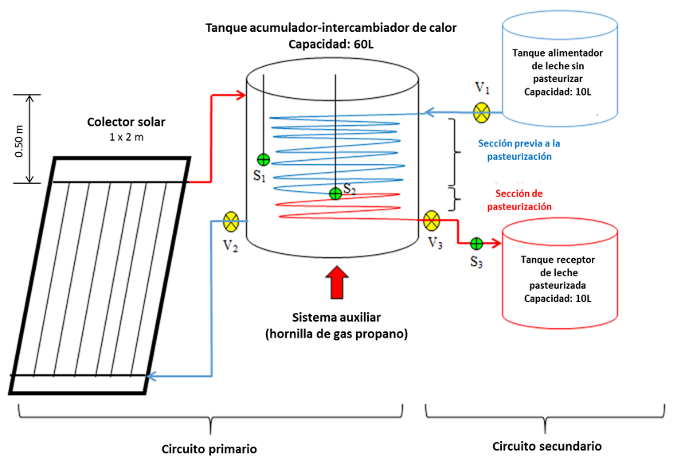

Bienvenido a Biolacteos: Tu Guía Completa sobre Pasteurización
Proceso Industrial
Explora el fascinante mundo de la pasteurización, un proceso térmico esencial desarrollado por Louis Pasteur que revolucionó la seguridad alimentaria. Aquí encontrarás información detallada sobre cómo funciona, por qué es crucial para proteger nuestra salud eliminando microorganismos dañinos como bacterias, levaduras y mohos, y su impacto en la industria alimentaria global.
Métodos Comunes y su Importancia
Profundizaremos en los métodos más comunes, como la pasteurización de alta temperatura y corto tiempo (HTST), la ultra pasteurización (UHT) que permite una vida útil más larga, y otros métodos adaptados a diferentes productos como jugos, cerveza y huevos líquidos. Comprender estos procesos te ayudará a tomar decisiones informadas como consumidor y a valorar la ciencia detrás de los alimentos seguros que disfrutamos cada día.
Información Destacada
- Tipos de Pasteurización: ¿Sabes la diferencia entre HTST y UHT? Aprende sobre los distintos métodos y sus aplicaciones. Ver detalles...
- Avances Recientes: Descubre las últimas investigaciones sobre técnicas innovadoras de pasteurización a baja temperatura. Leer más...
- Impacto Industrial: Analizamos el rol fundamental de la pasteurización en la industria láctea moderna. Leer más...
- ¿Solo Leche?: La pasteurización no solo se aplica a la leche. Aprende sobre otros alimentos. Más detalles...
Explora Nuestro Sitio
Navega por nuestras secciones para aprender sobre nuestra misión, conocer la historia de Louis Pasteur, leer noticias actualizadas, descargar recursos útiles, resolver tus dudas en las Preguntas Frecuentes y ponerte en contacto con nosotros.